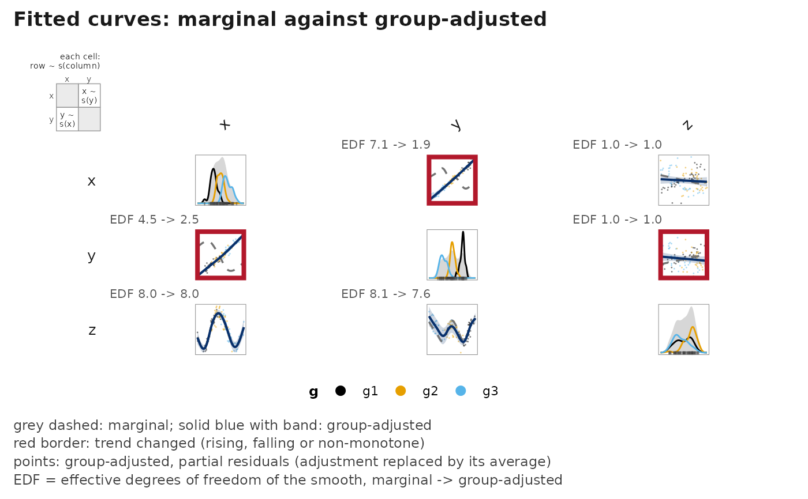

![[Stable]](figures/lifecycle-stable.svg)
Draws the matrix of a janusplot_compare() object with both fitted
curves in every off-diagonal cell: the first fit as a grey dashed
curve, the second as the solid curve with its band over the second
fit's raw points. A red border marks the cells whose trend changed
(rising, falling or non-monotone), and the strip above each cell gives the EDF of both fits.
Nothing is refitted.
Usage
# S3 method for class 'janusplot_compare'
plot(
x,
group = NULL,
order = c("original", "hclust", "alphabetical"),
style = janusplot_style(),
...
)Arguments
- x
A
janusplot_compareobject.- group
Name of a factor, character or logical column of
x$fit_b$datawhose levels colour the raw points, with one legend below the matrix, orNULL(the default). Drawing only. The column must exist inx$fit_b$dataand have at moststyle$group_max_levelslevels.- order
Order of the variables in the matrix:
"original"(the default, the order ofx$fit_b$vars),"hclust"(hierarchical clustering of absolute Pearson correlations inx$fit_b$data) or"alphabetical".- style
A
janusplot_style()object. The second fit's curve and band takecurve_colourandband_alpha; the points, density threshold, labels, diagonal, glyph style and compact tiers apply as inplot.janusplot_fit().- ...
Must be empty. An unknown name is an error.
Value
A patchwork object, which is a
ggplot: the matrix with its border labels, the group legend when
group is given, the shape-categories legend when
style$show_shape_legend is TRUE ("auto" leaves it off: the
compare cells carry no shape code), a title naming the two fits and
the key caption when style$show_glossary is TRUE.
Details
The layout follows plot.janusplot_fit(): every cell [r, c] shows
vars[r] ~ s(vars[c]), over the variables of the second fit, with the
key of that convention in the top-left corner, or under the matrix with
janusplot_style(legend_position = "bottom"). There is no colour scale
and no background. The caption keys the two curves by x$labels when
style$show_glossary is TRUE.
See also
janusplot_compare() for the object, plot.janusplot_fit()
for the matrix of one fit.
Other smooth-associations:
janusplot(),
janusplot_compare(),
janusplot_curves(),
janusplot_direction(),
janusplot_fit(),
janusplot_pair(),
janusplot_reference(),
janusplot_style(),
plot.janusplot_fit()
Examples
set.seed(2026L)
g <- rep(c("g1", "g2", "g3"), each = 40L)
mu <- c(g1 = 0, g2 = 2, g3 = 4)[g]
d <- data.frame(x = mu + stats::rnorm(120L), g = factor(g))
d$y <- -1.5 * mu + 0.8 * (d$x - mu) + stats::rnorm(120L, sd = 0.4)
d$z <- sin(d$x) + stats::rnorm(120L, sd = 0.3)
vars <- c("x", "y", "z")
fit_a <- janusplot_fit(d, vars, engine = "gam", derivatives = integer())
fit_b <- janusplot_fit(d, vars, adjust = ~ g, engine = "gam",
derivatives = integer())
cmp <- janusplot_compare(fit_a, fit_b,
labels = c("marginal", "group-adjusted"))
plot(cmp, group = "g")
